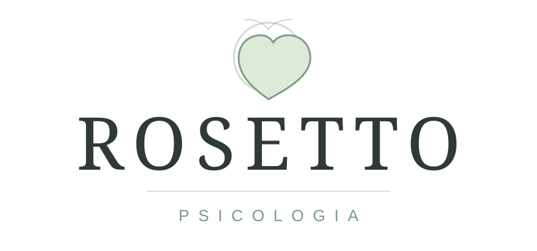

Ansiedade, pensamentos acelerados ou sensação constante de alerta.

Sobre a clínica
Acolhimento, clareza e presença para atravessar processos difíceis.
A Psicologia Rosetto nasce da ideia de que terapia não precisa ser um lugar distante ou frio. Aqui, cada sessão é conduzida com escuta atenta, sigilo, respeito à sua história e compromisso com o seu processo.
O objetivo não é oferecer respostas prontas, mas construir junto uma forma mais consciente de lidar com emoções, relações, escolhas e limites.
"A terapia é um lugar para se ouvir com menos cobrança e mais honestidade."
Quando procurar
Às vezes ele aparece como cansaço, irritação, ansiedade, dificuldade de dormir, sensação de estar no automático ou vontade de entender melhor a própria história.
Ansiedade, pensamentos acelerados ou sensação constante de alerta.
Dificuldade de impor limites, dizer não ou sustentar escolhas.
Relações que se repetem, machucam ou parecem difíceis de compreender.
Desejo de se conhecer melhor e viver com mais presença.
Pilares do cuidado
Um espaço sem julgamentos, onde a sua história pode ser dita com cuidado.
Atendimento atento ao que você traz, ao seu ritmo e às suas possibilidades.
Sigilo, responsabilidade profissional e respeito às singularidades de cada pessoa.
O processo terapêutico fortalece escolhas mais conscientes, possíveis e suas.
Atendimentos
O que a terapia move
Antes da escuta, muita coisa fica embaralhada. Depois, não some — mas começa a fazer sentido. É assim que a gente entende o movimento.
↔ arraste para os lados
Descubra seu caminho
"Você não precisa dar conta de tudo em silêncio.
Há espaço para respirar."
Como funciona
Você envia uma mensagem contando brevemente o que busca. Retornamos com horários, formato e informações iniciais.
Um encontro para compreender sua demanda, tirar dúvidas e perceber se o acompanhamento faz sentido para você.
A terapia avança com regularidade, escuta e cuidado, respeitando o seu ritmo e a complexidade da sua história.
Identificamos padrões, emoções e escolhas possíveis, transformando sofrimento em compreensão e movimento.
O processo segue enquanto fizer sentido, com pausas, revisões e novos objetivos construídos junto com você.
Depois de começar
Com o tempo, algumas coisas ficam mais nomeáveis: o que pesa, o que repete, o que precisa de limite e o que merece cuidado. A terapia ajuda a criar esse espaço interno para viver com mais presença.
Relatos
"A terapia me ajudou a entender padrões que eu repetia sem perceber. Hoje consigo me escutar com mais calma."
"Cheguei muito ansiosa e fui encontrando formas de lidar com minhas emoções sem me cobrar tanto."
"O atendimento online foi acolhedor e seguro. Senti presença mesmo à distância."
"Aprendi a olhar para meus limites sem culpa. Foi um processo delicado e muito importante."
Agende um horário
Envie uma mensagem para saber horários disponíveis, modalidades de atendimento e tirar dúvidas antes da primeira sessão.